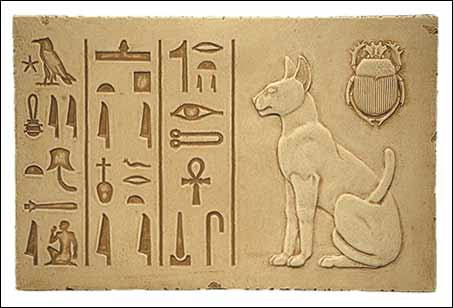
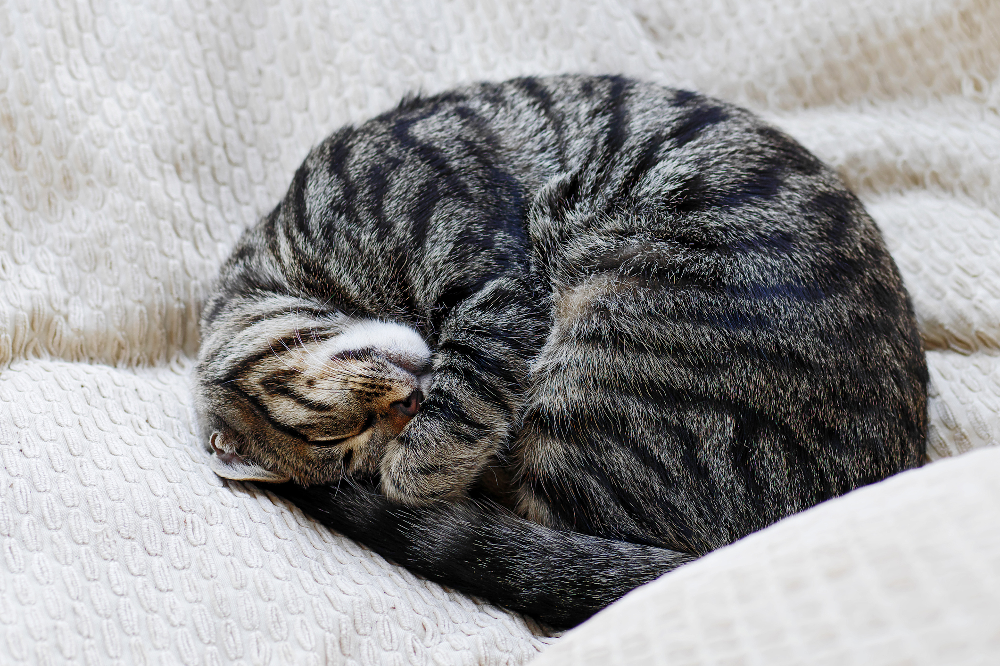
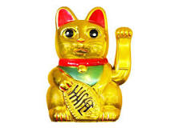

A macska, más néven házi macska (Felis silvestris catus) kisebb termetű húsevő emlős, ami a ragadozók rendjén belül a macskafélék (Felidae) családjának Felis neméhez és vadmacska (Felis silvestris) fajához tartozik. A vadmacska alfaja. Ügyes ragadozó, több mint 1000 faj tekinthető a zsákmányának. Emellett meglehetősen intelligens, beidomítható egyszerű parancsok végrehajtására vagy szerkezetek működtetésére – illetve képes önállóan is kisebb feladatok betanulására (lásd: A macska intelligenciája).
Körülbelül 10 000 évvel ezelőtt kezdett az ember társaságában élni, háziasításának első ábrázolása mintegy 4000 éve Egyiptomban történt.
Macskáink

Fajta

A macskának számos fajtája és színváltozata létezik. Csupasz és farok nélküli változatait is kitenyésztették. A macskák több mint százféle hangjel és testbeszéd segítségével kommunikálnak, mint például nyávogás („miaú”), dorombolás, bújás, fújás, morgás, perregés.
A lovakhoz és más háziállatokhoz hasonlóan a macskák is képesek vadon élve fennmaradni. Az önállóan élő macskák gyakran kisebb kolóniákat alkotnak. Az állatvédők beszámolói szerint azonban hosszú távon csak igen kevés példány képes gazdátlanul életben maradni, többségüket elpusztítják a járművek, a ragadozók, az éhség, az időjárás viszontagságai és a betegségek. Ezért számos országban, köztük hazánkban is a macskák és más háziállatok elhagyása, illetve otthonukból való szándékos eltávolítása (bántalmazásukhoz hasonlóan) büntetendő.
A macska sok kultúra legendáiban és mítoszaiban tölt be jelentős szerepet, az egyiptomiak, a kínaiak és a vikingek ősi történeteiben is szerepel. Általában tisztelik, de olykor becsmérlik is.
Életmód
A kölyköket 8-9 hetes korukig az anyjuk eteti, a felnőtt egyedeknek naponta 1-2 étkezésre van szükségük, melyek során testtömeg-kilogrammonként mintegy 4-5 dekagramm táplálékot fogyasztanak el.
A macskák gyakran összegömbölyödve alszanak. A macskák más állatokhoz képest meglehetősen sok időt töltenek alvással, különösen idősebb korukban. A napi alvásigényük körülbelül 12-16 óra, de átlagosan 13-14 órát alszanak, némelyikük azonban akár napi 20 órát is képes alvással eltölteni. A macska időnként félálomban pihen, ehhez általában a lábait behajlítva lekuporodik, ill. lefekszik, szemeit behunyja, füleit előre vagy a zajok irányába fordítja. A félálomban töltött idő végén rendszerint alvó pózt vesz fel (például összegömbölyödik), majd elalszik.
Az alvási folyamat az emlősökéhez és a madarakéhoz hasonlóan zajlik. A felszínes alvást felváltó mélyalvási szakaszban az izmok ellazulnak és bekövetkezik a REM-fázis vagy álomfázis, mely során az agyi aktivitást jelző EEG jelek hasonlítanak az ébrenlétnél megfigyelhetőekre. Ezt az időszakot a gyors szemmozgás mellett a bőr és az izomzat rángatózása is jelezheti. A mintegy 6-7 perces mélyalvási szakaszt körülbelül 20-30 perces felszínes alvás követi, melynek végén a macska néha felébred és testhelyzetét megváltoztatva újra elalszik. Az alvó állat számára a zaj vagy egyéb zavaró körülmény hatására történő hirtelen felébredés stresszt okoz, amely hosszú távon, gyakran megismétlődve pszichikai rendellenességet, betegséget is eredményezhet.
Éjszakai életmódot folytató állatok lévén a macskák (elsősorban a fiatalabb példányok) gyakran hiperaktívvá és játékossá válnak az esti vagy a hajnali órákban. Az ilyen időszakokat „esti/éjszakai őrületnek” vagy „fél órás őrjöngésnek” is nevezik.
A macska vérmérséklete nagyban függ fajtájától illetve tartási körülményeitől. A soványabb példányok általában aktívabbak testesebb társaiknál.
A macska normál testhőmérséklete 38-39 °C. A macskának hőemelkedése van vagy lázas, ha a testhőmérséklete eléri a 39,5 °C -ot vagy feljebb emelkedik, amennyiben pedig 37,5 °C alá csökken, akkor kihűlt. Összehasonlításképpen az ember normális testhőmérséklete körülbelül 36,8 °C. A házi macska szívverése percenként 140 és 220 között van, nagyban függ attól, hogy az állat mennyire izgatott (nyugodt állapotban 150 és 180 közé esik, amely nagyjából a duplája az ember szívverésének).
Vadászat
A jól táplált házi macskák is vadásznak a környezetükben élő madarakra, egerekre, patkányokra, skorpiókra és más kisebb állatokra. Gyakran előfordul, hogy meg is mutatják zsákmányukat a gazdájuknak. Ennek oka nem tisztázott, de a barátságos magatartás gyakran társul ezzel a viselkedéssel. A macskák talán dicséretet remélnek a csoporthoz való tartozás effajta szimbolikus kinyilvánításáért. Némelyik elmélet szerint azonban a macskák abból, hogy embertársaik a nap nagy részét távol töltik tőlük, arra következtetnek, hogy vadászattal töltik az idejüket és ezért vannak bővében az ételnek.
Zsákmányuk odaajándékozásával csupán szeretnének hozzájárulni gazdájuk élelmezéséhez.
Táplálkozás

A macskák fogazata és emésztő szervrendszere a húsevéshez alkalmazkodott. A házi macskák kis mennyiségű növényi táplálékot is igényelnek, melyhez alkalmanként fű vagy más növények fogyasztásával jutnak hozzá. Míg a medvék és a kutyák általában gyümölcsökkel, bogyókkal, gyökerekkel és mézzel egészítik ki étrendjüket, a macskák leginkább húst fogyasztanak. Mivel egy genetikai anomália folytán valamennyi macskaféle képtelen az édesség ízlelésére, ezek az állatok többnyire idegenkednek a gyümölcsök és a bogyók elfogyasztásától. Ennek ellenére sok házi macska kedveli a zöldséget. A boltokban kapható macskaeledelek elsősorban húsból állnak, de gyakran tartalmaznak nagy mennyiségű búzát vagy rizst, amelyet hús melléktermékekkel, ásványi anyagokkal és vitaminokkal egészítenek ki. Előfordul, hogy a macskák füvet, leveleket, cserjéket vagy szobanövényeket rágcsálnak, elősegítve a megemészthetetlen táplálék felöklendezését.
A macskák képtelenek pusztán vegetáriánus étrenden élni, mivel ekképpen nem tudják előteremteni azokat a számukra szükséges tápanyagokat, melyeket a növények nem vagy csak kis mennyiségben tartalmaznak. Ezek közé tartozik a taurin, az A-vitamin (a macskák szervezete nem képes a növényekben nagy mennyiségben jelen levő A-provitamin A-vitaminná való átalakítására) és ide tartoznak egyes zsírsavak is. A taurin hiányától a macskák szeme lassan leépül, amely kezdetben látásproblémákat végül pedig maradandó vakságot okoz.
Higiénia
Köztudott, hogy a macskák rendkívül igényesek a tisztaságot illetően, akár napi 3 órát is eltölthetnek tisztálkodással. A mosakodás elősegíti a test melegének megőrzését, eltávolítja az élősködőket és serkenti a bőr vérkeringését. Nyelvük papilláival és nyáluk használatával tartják tisztán bundájukat. A macska nyála jól tisztítja a szőrzetet, az embernél azonban allergikus reakciót válthat ki. A macskára allergiás emberek egy része szénanáthától, asztmától vagy bőrkiütésektől szenved, másokon azonban nem jelentkeznek az allergiára utaló tünetek. Némelyik macska szívesen mosdatja a fajtársait vagy akár a gazdáját is. A tisztálkodás közben lenyelt és a gyomorban összetapadt és megszilárdult szőrt (melyet bezoárkőnek neveznek) időnként kiöklendezik. A hosszú szőrű fajtáknál ez gyakrabban fordul elő, azonban a felöklendezés megfelelő étrenddel és a bunda gyakori átfésülésével vagy szőrkefével való gondozásával elkerülhető. A macskák körülbelül ugyanannyi folyadékot veszítenek mosakodás közben, mint a vizelés során, ezért fontos hogy a folyadék pótlására mindig álljon a rendelkezésükre friss, tiszta ivóvíz.
Betegségek
A macskákat a legtöbb degeneratív, szervi, öregségi és daganatos betegség ugyanúgy veszélyezteti, mint az embereket.
Sok betegségre kizárólag csak a megváltozott viselkedés és küllem utal, ezért szükség van az egészséges állat viselkedésének figyelésére. Ilyen tünet többek között az étvágytalanság, fogyás, hányás, hasmenés, nyálzás, visszahúzódás, kedvetlenség, izgatottság, feltűnő nyávogás, szőrhullás, vakaródzás, tüsszögés, köhögés, szemfolyás, orrfolyás, vizelési problémák, a harmadik szemhéj láthatóvá válása. Súlyos betegségtünet a kiszáradás is. Többféle oka lehet, jól észrevehető tünete a háton lévő bőr fellazulása, megemelve redőben marad.
A fertőző betegségek egy része fajspecifikus (pl. panleukopénia és leukózis), de a veszettség az embert is veszélyezteti. A macskáknál gyakori fertőző betegségek egy részére van védőoltás (pl. panleukopénia, leukózis, veszettség), másokra nincs (pl. macska-AIDS). Külön oltásprogram van lakásban élő és kijáró macskák számára, melyek elvégzése kijáró, vagy kertben élő macskáknál feltétlenül szükséges, lakásban élőknél ajánlott. Lakásban élőknél a veszettség és behozott leukózis esélye csak elméleti, de a panleukopénia esélye reális.
Az élősködők (bolha, kullancs, rühatka) által okozott betegségek (pl. Lyme-kór, szívférgesség és babéziózis) megelőzhetők spot-on oldatok alkalmazásával, vagy bolhairtó nyakörv használatával. Míg a rühesség viszonylag könnyen, a Lyme-kór lassan és bizonytalanul gyógyítható, a kifejlődött szívférgesség kezelése gyakorlatilag reménytelen, ezért a hangsúly a megelőzésen van.
Társas viselkedés
A macskákat az emberek többsége magányos állatokként ismeri, de valójában nagyon is társaságkedvelők. A legnagyobb különbség a macskák és kutyák (melyekkel gyakran hasonlítják össze őket) társas viselkedése között az, hogy a macskáknak nincs kollektív túlélési stratégiájuk vagy „falka mentalitásuk”; ami mindössze annyit jelent, hogy maguk gondoskodnak alapvető szükségleteikről (például egyedül keresnek élelmet és védekeznek támadás esetén). Ez azonban nem aszociális magatartás. Talán a legjobb példa a macskák természetes viselkedésére az elvadult példányok kolóniákba való szerveződése, melyekben az egyes tagok magukról gondoskodnak.

Az emberekkel való szimbiotikus kapcsolatuk évezredek során alakult ki. Gazdájukhoz való kötődésük nehezen vethető össze a vadmacskák magatartásával, de annyi bizonyos, hogy tudatában vannak annak, hogy az ember nem az ő fajukhoz tartozik (és nyilván önmagukat sem tekintik embernek). Ez a különbségtétel a gazdájukkal való kommunikáció során használt hangjelekben és testbeszédben is megnyilvánul. Egyes vélemények szerint pszichológiai szemszögből a macska az embert pótanyának tekinti, így a felnőtt egyedek egyfajta állandósult gyermekkorban élik le az életüket.
Életkor
A házi macskák tovább élnek, ha nem engedik őket ki a szabadba (így csökken az esélye a harcokból, balesetekből származó sérüléseknek és a betegségeknek) és ha ivartalanítva vagy kasztrálva vannak. A szobában tartott macskák általában 14-20 évig élnek, noha a Guinness Rekordok Könyve szerint a legöregebb ismert macska 34 éves volt. További fontos lehetőség az élettartam meghosszabbítására a macska életkorának és életmódjának megfelelő táplálék etetése. A macskák és az emberek életkorának összehasonlításához általában egy évet 7 macskaévnek feleltetnek meg. Mivel azonban a macskák 2 éves koruk után lassabban fejlődnek az embernél, a skálát módosították, egy emberi évet 4 macskaévnek számítva. Egy 7 éves példány középkorúnak számít, egy 10 év feletti pedig már idősnek.
| Macska | Ember | Macska | Ember | Macska | Ember | Macska | Ember |
|---|---|---|---|---|---|---|---|
| 1 hónap | 5-6 hónap | 1 év | 15-16 év | 8 év | 48 év | 15 év | 76 év |
| 2 hónap | 9-10 hónap | 2 év | 24 év | 9 év | 52 év | 16 év | 80 év |
| 3 hónap | 2-3 év | 3 év | 28 év | 10 év | 56 év | 17 év | 84 év |
| 4 hónap | 5-6 év | 4 év | 32 év | 11 év | 60 év | 18 év | 88 év |
| 5 hónap | 8-9 év | 5 év | 36 év | 12 év | 64 év | 19 év | 92 év |
| 6 hónap | 10-12 év | 6 év | 40 év | 13 év | 68 év | 20 év | 96 év |
| 8 hónap | 13 év | 7 év | 44 év | 14 év | 72 év | 21 év | 100 év |
Túlszaporodás
A Humane Society of the United States állítása szerint évente 3-4 millió macska és kutya elaltatására kerül sor, és még több kerül közülük az állatmenhelyekre, mivel jelentősen több állat születik, mint ahány számára otthont lehet biztosítani. A kasztrálás és ivartalanítás azonban segíthet leküzdeni a túlszaporodás problémáját.

A helyi állatvédelmi szervezetek is arra biztatják a lakosságot, hogy lehetőség szerint kasztráltassák/ivartalaníttassák házikedvenceiket, és hogy újak megvásárlása helyett inkább fogadjanak örökbe állatmenhelyekre került példányokat.
10 tény a macskákról
- A macskákat az ókori Mezopotámiában és Egyiptomban „háziasították”, vagy valami ilyesmi. A Nílus-menti ország macskakultusza mindenki számára ismert, de talán olyan részletek nem, hogy a tehetősebbek ékszerekkel is elhalmozták kedvenceiket, és minél gazdagabb volt valaki, annál impozánsabb nyakörvet vagy inkább nyakéket viselt háziállata. És ez nem minden. Az ókori Egyiptomban, ha egy macska elpusztult, gazdája a gyász jeléül leborotválta a szemöldökét. Ha pedig valaki szándékosan vagy véletlenül megölt egy macskát, az halállal lakolt a tettéért. 
- Az ázsiai kifőzdék és éttermek kötelező dísztárgya az integető macska. De kit tisztelhetünk benne? Maneki-nekónak több eredettörténete van. Íme, az egyik: egy nap egy tehetős illető arra lett figyelmes, hogy egy templom ajtajában őrködő macska int neki, mintha csak be akarná hívni, és ahogy belépett az ajtón, a villám belecsapott a földbe azon a helyen, ahol előtte állt. Egyesek szerint így lett a mancsát felemelő (valószínűleg éppen mosakodni készülő) macska a szerencse egyik szimbóluma Keleten.
- A tapintószőrök, vagyis a bajusz olyan hosszú, mint amilyen széles a szőrös tulajdonosa, így tudják felmérni, hogy egy adott helyen átférnek-e vagy sem. Mert ugyan úgy tűnhet, hogy a macskák tudnak folyékony halmazállapotúak lenni, ez is csak a nagy átverés része, és akár élet és halál kérdése is lehet, hogy fel tudják mérni, mennyire szűk helyen kell átpréselni magukat. Vagyis soha, de soha ne nyirbáld meg ezeket.
- A macskák egymással nem, csak velünk kommunikálnak nyávogással, és mindenféle hangnak külön jelentése van. És ha tudni akarod, hogy Cirmi éppen mit gondol, érdemes odafigyelni a farkára is, ha rezegteti, akkor minden oké, örül, hogy lát, a kérdőjel is azt jelenti, hogy barátságos, de azt is, hogy azért vannak kétségei, ha pedig a lábad köré penderíti, az bizony egyenlő egy öleléssel.
- Ernest Hemingway egykori, floridai birtokán rengeteg olyan macska él, melyeknek több ujja van a megszokottnál. Ez a fejlődési rendellenesség a polidaktilia, vagyis sokujjúság, és ők mindannak a sokujjú macskának (név szerint Snow White, vagyis Hófehérke) a leszármazottai, melyet az író még egy hajókapitánytól kapott.
- Akinek van macskája, talán nem lepi meg a tény, hogy kedvenceink a nap nagy részében alszanak vagy szunyókálnak. De mennyi az annyi? A nagy része a napnak a kétharmadát jelenti, vagyis egy kilencéves macska mindössze három évet volt ébren. És hát igen, a fennmaradó időben sem feltétlenül mi vagyunk a középpontban, az ébrenlétük egyharmadát ugyanis tisztálkodással töltik.
- Ha közelről megnézed, a macskák orra nem sima, hanem tele van apró dudorokkal. Ezeknek rajzolata ugyanolyan egyedi, mint a mi ujjlenyomatunk, vagyis nincs két egyforma cicaorr. Apropó, a nyelvük azért olyan érdes, mert így könnyebb a legapróbb húscafatokat is lecsupaszítani a csontokról. Ja, és persze ez a világ leghatékonyabb fésűje is... állítólag.
- Az emberekkel ellentétben a macskák ihatnak tengervizet, a veséjük ugyanis képes megbirkózni ezzel a sós folyadékkal.
- A legtöbb kandúr bal-, a nősténymacskák nagy része pedig jobbkezes (vagyis -mancsos).
- A macskák nem éreznek édes ízeket, viszont van ún. vomeronazális, más néven Jacobson-szervük. Ez összeköttetésben van a szájüreggel, amivel segít érzékelni a „különlegesebb” szagokat. És igen, amikor a macskád hülye fejet vág, akkor valójában nem utál, csak szaglászik utánad .